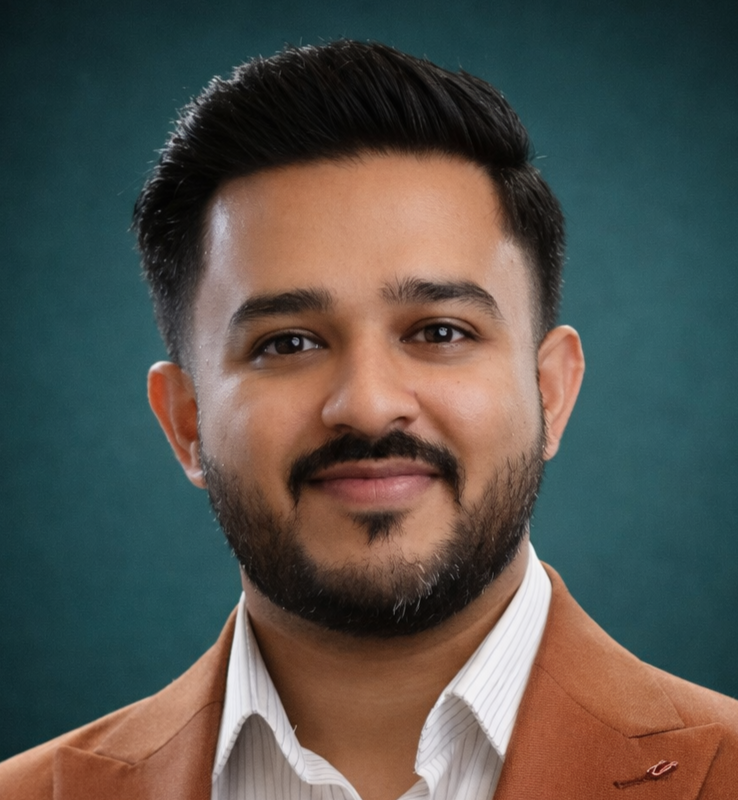

My background spans several closely related disciplines. Select the role most relevant to your opening and see how my experience maps to it - including an honest view of where I am strong versus where I am still developing.
This is my primary background. Over 7 years I have operated as a dedicated pre-sales individual contributor, partnering with Account Executives across 30+ enterprise opportunities in the GCC. I own the full cycle - from discovery and qualification through customised demonstrations, PoC delivery, RFP responses, and ROI business cases presented at board level. Consistent track record of contributing to sales target overachievement through solution-led selling.
Process mining is one of my core specialisations. I have spent years building and demonstrating enterprise process mining solutions to clients across banking, government, and telecom in the GCC. My work sits primarily on the pre-sales and advisory side - designing PoCs that use real event-log data to surface insights. Primary platform expertise is in ARIS Process Mining.
BPM is the core of my professional background. As a pre-sales business architect specialising in one of the world's leading enterprise BPM platforms (ARIS), I have spent 7+ years positioning, demonstrating, and advising on business process management at enterprise scale. My focus has always been on translating BPM methodology into visible commercial value, not just tool adoption.
I have worked with two of the leading enterprise architecture and portfolio management platforms - ARIS for business and process architecture, and Alfabet (now Bizzdesign) for strategic portfolio management and IT architecture alignment. My experience is primarily pre-sales and advisory: building demonstrations and business cases that show CIOs how these platforms connect business strategy to IT investment and execution.
I want to be transparent here. My background is vendor-side pre-sales, not direct client-side transformation delivery. What I bring is deep BPM and EA domain knowledge, extensive exposure to how organisations across banking, government, and telecom approach transformation challenges, and a strong ability to facilitate strategic conversations. What I have not done is own end-to-end delivery of a transformation programme as an internal or consulting resource.
Being transparent: AI and intelligent automation is an emerging specialism for me, not an established one. My hands-on experience comes from working with AI-augmented process intelligence tooling in a pre-sales context. I have been actively building understanding of Agentic AI frameworks, LLM orchestration, and prompt engineering. I would be a strong fit for roles combining deep process and domain knowledge with genuine AI curiosity - not roles requiring proven AI delivery credentials.
I have spent 7+ years as a pre-sales business architect specialising in enterprise process intelligence, BPM, and EA platforms across the GCC. My work is client-facing and commercial: helping enterprises understand what is possible, demonstrating it in a way that resonates with their specific challenges, and building the business case to act on it. Primary platforms are ARIS (Software AG) and Alfabet (now Bizzdesign).
I operate across the GCC and MENA region - banking, government, telecom, and retail clients. I understand how buying decisions are made in this market, how to navigate C-suite relationships in the Gulf, and how to position enterprise software in environments where proof of value must be earned, not assumed.
I am looking to take my pre-sales and architecture expertise into a role with broader scope - whether a more senior solution engineering position, a business architecture advisory role, or a technology firm where AI and data are the core product. I value organisations that take domain expertise seriously alongside technical depth.
Open to conversations about the right opportunity. Happy to provide a tailored CV for any specific role.